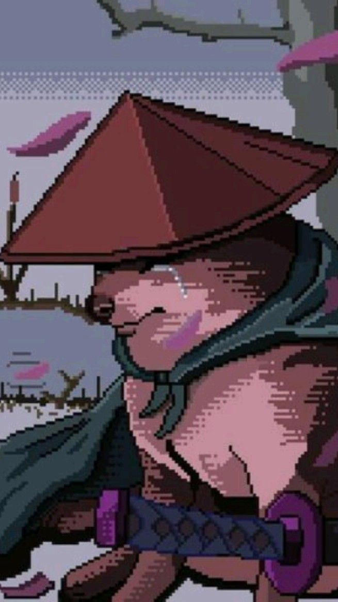

Meu amor, Kamille.
O que aconteceu hoje de manhã foi uma grande confusão, uma tempestade que não deveria ter existido. O que deveria ter sido um momento comum acabou se tornando algo muito doloroso para nós dois.
Eu nunca quis te machucar, e tudo o que aconteceu foi resultado de um mal-entendido. Meu amigo, que apenas buscava um pouco de carinho, acabou usando o meu celular e, no meio disso tudo, ele se confundiu e te fez acreditar que eu estava envolvido em algo que eu nunca faria. Você é tudo para mim, e eu jamais te desrespeitaria dessa forma.
Sei que parece impossível, mas peço que entenda que tudo o que aconteceu foi uma grande trapalhada, um engano que eu jamais deixaria acontecer se soubesse o que estava se passando. Eu te amo, Kamille, e tudo o que quero é poder te abraçar de novo, olhar nos seus olhos e dizer o quanto te amo.

Recomeçar ao seu lado seria como reviver um sonho, um sonho que eu nunca quis acordar.
O dia 28 de agosto está chegando, e eu não consigo imaginar um dia mais feliz do que passar esse momento especial com você. Além disso, setembro também se aproxima, e com ele nosso aniversário de namoro. Como eu poderia querer mais do que celebrar o amor que sentimos um pelo outro?
Eu me vejo ao seu lado, planejando cada detalhe da nossa vida juntos, desde nossos passeios, nossos risos, até os momentos mais simples, como jogar Minecraft lado a lado, ou apenas ficar abraçados no sofá. Eu já consigo imaginar o dia em que finalmente poderemos nos encontrar, e o quanto esse dia será inesquecível.
Por isso, te peço com todo o meu coração: Vamos recomeçar, vamos continuar construindo nossa história, porque nada mais importa para mim além de estar ao seu lado.
Se você também sente isso, me envie a mensagem '143' no WhatsApp, e vamos dar continuidade ao nosso sonho, juntos.
Se esta for sua escolha, Kamille, então aceitarei, mas não sem antes te lembrar de tudo o que vivemos.
Lembro de todos os momentos em que conversamos até tarde da noite, sonhando com o dia em que nos encontraríamos. Todos os nossos planos, nossos risos, as promessas que fizemos um ao outro. Sei que não sou perfeito, mas tudo o que fiz foi com o desejo sincero de te fazer feliz.
Sei que hoje as coisas pareceram confusas, mas eu preciso que você entenda que eu nunca quis te machucar. Se escolher que tudo deve acabar por aqui, eu respeitarei sua decisão, mesmo que meu coração se parta.
Por favor, pense bem, e se esse realmente for seu desejo, mande 'F' no WhatsApp, e tudo entre nós acabará. Mas saiba que sempre vou te amar, e que você sempre será a minha Kamille.